| Eclipse Article |

The Visual Editor project also provides a framework that can be extended. This is a first of a series of tutorial that we plan to write in order to provide developers quick map to the way VE can be extended.
Gili Mendel, IBM
Joe Winchester, IBM
Dave Orme, db4objects
March 16, 2005
The Visual editor project provides GUI building support for Swing and SWT. Supporting these widgets are a reference implementation on top of the core VE framework. In this tutorial we are going to create a 3.1 based Eclipse plugin org.eclipse.ve.example.customwidget that will provide the folliwng:
The tutorial is going to go through the steps to build the org.eclipse.ve.example.customwidget plugin. However, you can checkout the complete plugin from Eclipse tool's CVS (where this tutorial is based in).


Or, you can also download the zipped plugin from here.
 Make sure that you are pointing to a 3.1 target
(Windows->Preference->PDE->Target Platform) which has VE, GEF, and
EMF on top of it.
Make sure that you are pointing to a 3.1 target
(Windows->Preference->PDE->Target Platform) which has VE, GEF, and
EMF on top of it.
In order to build this plugin from scratch we will use the PDE to create a plugin Project.
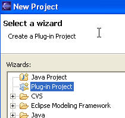
Name it org.eclipse.ve.example.customwidget, and use the 3.1 target version and OSGi bundle manifest
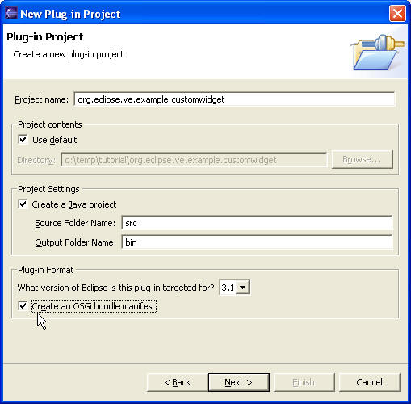
Give it a provider and plugin names, and click Finish.
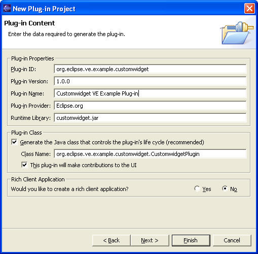
Next we are going to add the following plugins as dependencies (add all of them up front so that we do not have to do so later on one at the time as we use VE functionality):
org.eclipse.ui,
org.eclipse.core.runtime,
org.eclipse.ve.java.core,
org.eclipse.jdt.core,
org.eclipse.jem,
org.eclipse.jem.proxy,
org.eclipse.ve.cde,
org.eclipse.ve.swt,
org.eclipse.ve.propertysheet,
org.eclipse.gef,
org.eclipse.emf.ecore
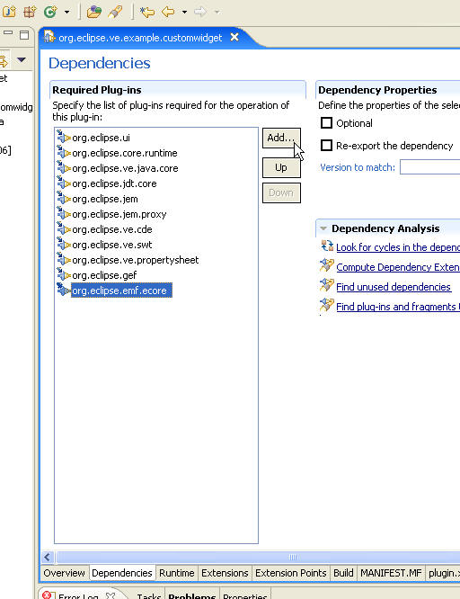
The Custom Widget in this tutorial is a composite that has 3 controls on it: A label, a text field, and a button. You can build it with VE or just get it from CVS:
MyCustomPrompter.java, and ButtonSelectionListener.java and place them in the org.eclipse.ve.example.customwidget.prompter package
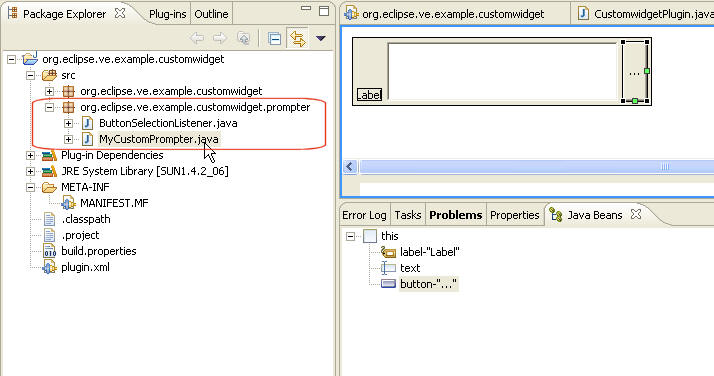
In order to make the MyCustomPrompter custom widget available for use, we are going to export our org.eclipse.ve.example.customwidget.prompter package into a jar and add it to our plugin
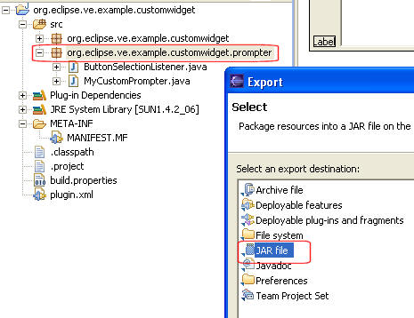
Make sure to call the jar customwidgets.jar. In the example below, the target path is the plugin project, so the .jar is added to the project directly.
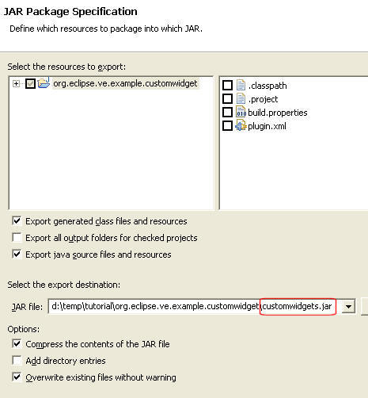
In order to make the customwidgets.jar available for users to use on the target IDE, we are going to define a Classpath container that points to our jar. Users would then be able add this container to their classpath and make the MyCustomPrompter widget available for use.
To do so, we will add the following to the plugin.xml of our plugin:
<plugin>
<extension
point="org.eclipse.jdt.ui.classpathContainerPage">
<classpathContainerPage
name="Custom Prompter"
class="org.eclipse.ve.internal.java.wizard.RegisteredClasspathContainerWizardPage"
id="org.eclipse.ve.example.PrompterContainer">
</classpathContainerPage>
</extension>
<extension
point="org.eclipse.jdt.core.classpathContainerInitializer">
<classpathContainerInitializer
class="org.eclipse.ve.internal.java.core.RegisteredClasspathContainerInitializer"
id="org.eclipse.ve.example.PrompterContainer">
</classpathContainerInitializer>
</extension>
<extension
point="org.eclipse.ve.java.core.registrations">
<registration
container="org.eclipse.ve.example.PrompterContainer"
description="Custom Prompter">
<library runtime="customwidgets.jar"/>
</registration>
</extension>
</plugin>
 The jar name registered here must be the same name/path we gave the in our
project jar itself.
The jar name registered here must be the same name/path we gave the in our
project jar itself.
If you launch the workspace you will be able to see/use this container :
Launch the workspace with an Eclipse Application configuration
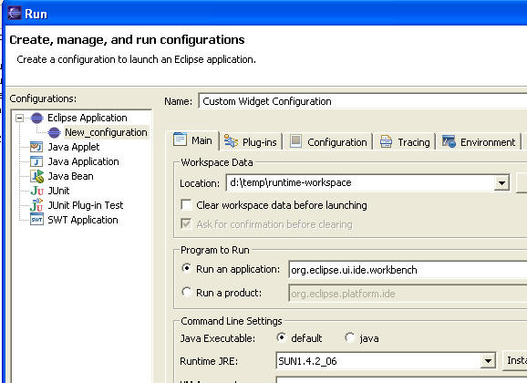
Create a new Java Project, and go to the the Build Path's Libraries configuration page. The Custom Prompter container should be available.

If you click Next, you should see that it is configured as following
Click Finish and OK to add the widget jar to your project.
<xmi:XMI xmi:version="2.0"
xmlns:xmi="http://www.omg.org/XMI"
xmlns:palette="http:///org/eclipse/ve/internal/cde/palette.ecore"
xmlns:utility="http:///org/eclipse/ve/internal/cde/utility.ecore">
<palette:CategoryCmp xmi:id="swtCat0">
<categoryLabel xsi:type="utility:ConstantString" string="Custom"/>
<cmpGroups xsi:type="palette:GroupCmp">
<cmpEntries xsi:type="palette:AnnotatedCreationEntry" xmi:id="entry2" icon16Name="platform:/plugin/org.eclipse.ve.example.customwidget/icons/custom.gif">
<objectCreationEntry xsi:type="palette:EMFCreationToolEntry"
creationClassURI="java:/org.eclipse.ve.example.customwidget.prompter#MyCustomPrompter"/>
<entryLabel xsi:type="utility:ConstantString" string="Prompter"/>
</cmpEntries>
</cmpGroups>
</palette:CategoryCmp>
</xmi:XMI>
What this xmi file says is that we are creating a new category (a GEF palette drawer), with a "Custom" label. This category will have a single entry with an icon, a label ("Prompter"), and a class URI for our MyCustomPrompter class.
 You will have to add
the palette's icon to your project at the path designated above
icons/custom.gif
You will have to add
the palette's icon to your project at the path designated above
icons/custom.gif
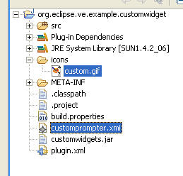
 XMI files are quite verbose and easy to make syntax mistakes in. The best way to
use them, is to take one that works, and change the areas the satisfy your
needs.
XMI files are quite verbose and easy to make syntax mistakes in. The best way to
use them, is to take one that works, and change the areas the satisfy your
needs.
Now that we have our palette xmi file available, we need to contribute it to the Visual Editor by adding to the following extension in the plugin.xml manifest:
<extension
point="org.eclipse.ve.java.core.contributors">
<palette
container="org.eclipse.ve.example.PrompterContainer"
categories="customprompter.xmi"/>
</extension>
Launch again the IDE, and create a Visual SWT Class (e.g., Shell) and look at the palette... MyCustomPrompter now be available. As you can see in the following figure, we have created a Visual SWT class and dropped the prompter on the shell.
 Make sure to launch the workspace with the -clean option, as we have changed the manifest file.
Make sure to launch the workspace with the -clean option, as we have changed the manifest file.
The MyCustomPrompter class has an int property named type
with a getType() and setType(). The setType method will
only accept three integer values, 0, 1, and 2.
If you look at the previous figure, the Visual Editor will use by default
an int cell editor for the type property. We would like in this
particular case to make VE an enum cell editor that will have a pull down with
three options: Dots, More, and Open.
public final static int DOTS = 0;
public final static int MORE = 1;
public final static int OPEN = 2;
:
:
public void setType (int type) {
switch (type) {
case DOTS: button.setText("...");
break;
case MORE: button.setText("More");
break;
case OPEN: button.setText("Open");
break;
default:
throw new IllegalArgumentException("Value " + type + " must be one of 0, 1 or 2");
}
}
To do so we will have to create a
BeanInfo
class. BeanInfo the the generic manner to describe a JavaBean in Java.
To denote that the type property is an enum, we used the following code in
MyCustomPrompterBeanInfo.java
public PropertyDescriptor[] getPropertyDescriptors() {
try {
PropertyDescriptor[] result = new PropertyDescriptor[2];
result[0] = new PropertyDescriptor("text",MyCustomPrompter.class);
result[1] = new PropertyDescriptor("type",MyCustomPrompter.class);
result[1].setValue("enumerationValues", new Object[] {
"Dots", new Integer(MyCustomPrompter.DOTS), "org.eclipse.ve.example.customwidget.prompter.MyCustomPrompter.DOTS",
"More", new Integer(MyCustomPrompter.MORE), "org.eclipse.ve.example.customwidget.prompter.MyCustomPrompter.MORE",
"Open", new Integer(MyCustomPrompter.OPEN), "org.eclipse.ve.example.customwidget.prompter.MyCustomPrompter.OPEN"
});
return result;
} catch (IntrospectionException e) {
e.printStackTrace();
return null;
}
}
The BeanInfo class overrided the getPropertyDescriptors(). It exposes two properties, text, and type. for the type property is with with a key/value pair of a VE enumeration values. An enumeration value is a 3-topple: label (text), value, and the code to generate for that enum. For example, the "Dots" label, will use the value of the public fields DOTS, and will generate the org.eclipse.ve.example.customwidget.prompter.MyCustomPrompter.DOTS when the Dots is selected.
 Overriding the getPropertyDescriptors method by itself will export only
the text and type properties. We typically
need to make some of the super classes properties visible as well (for such thing as the
size, bound, focus, font etc.). To re-export
the same properties, MyCustomPrompterBeanInfo also overrides the
getAdditionalBeanInfo method as following
Overriding the getPropertyDescriptors method by itself will export only
the text and type properties. We typically
need to make some of the super classes properties visible as well (for such thing as the
size, bound, focus, font etc.). To re-export
the same properties, MyCustomPrompterBeanInfo also overrides the
getAdditionalBeanInfo method as following
public BeanInfo[] getAdditionalBeanInfo() {
try{
return new BeanInfo[]{Introspector.getBeanInfo(Control.class)};
} catch (IntrospectionException e){
return new BeanInfo[0];
}
}
 Before you re-launch your application after placing the BeanInfo in the plugin you need to re-export the customwidgets.jar
(see The Custom Widget) so that it includes the
new BeanInfo class.
Before you re-launch your application after placing the BeanInfo in the plugin you need to re-export the customwidgets.jar
(see The Custom Widget) so that it includes the
new BeanInfo class.
 If you are reading this before a VE1.1 release build, you may have to do a
Project->clean, close, and reopen the java project that you are using the
MyCustomPrompter class so that the introspector clear its beaninfo cache.
If you are reading this before a VE1.1 release build, you may have to do a
Project->clean, close, and reopen the java project that you are using the
MyCustomPrompter class so that the introspector clear its beaninfo cache.
he MyCustomPrompter class has a String property named text. By default the Visual Editor will use a generic String cell editor for it (see Figure). But let assume that we want to develop a specialized cell editor for this property. First we are going to use the Visual editor to develop the content of the cell editor (LabelDialogContent.java), and then we will contribute it to VE so that it uses it as the text cell editor for a MyCustomPrompter class. The main interface for LabelDialogContent is the getString and setString methods. The idea is that when you click on the text property on the property sheet, VE will bring up an instance of this class, call setString with the current value, and at the end call getString to get the final, edited value.
LabelDialogContent extends a SWT composite and will be used by the CustomLabelEditor.java class as following:
protected Object openDialogBox(Control cellEditorWindow) {
Display display = cellEditorWindow.getDisplay();
TitleAreaDialog dialog = new TitleAreaDialog(display.getActiveShell()) {
LabelDialogContent content;
protected Control createContents(Composite parent) {
Control result = super.createContents(parent);
setTitleImage(CustomwidgetPlugin.getCustomImage());
setTitle("Prompter's text property editor");
setMessage("Enter the text property, or select a default one by checking the Hello or GoodBye",IMessageProvider.INFORMATION);
return result;
}
protected Control createDialogArea(Composite parent) {
content = new LabelDialogContent(parent, SWT.NONE);
content.setString(stringValue);
return content;
}
public String toString() {
return content.getString();
}
};
if (dialog.open() != Window.CANCEL)
return createStringJavaObject(dialog.toString());
else
return getValue();
}
The openDialogBox will be called when the text property is selected in the property sheet. It in turn opens JFace dialog wit our LabelDialogContent as the createDialogArea's content. The openDialogBox needs to return the new value. This value is not a String. This value is the VE EMF model element representing the string. The createStringJavaObject call will convert the string to a EMF representation of it.
 When we prime the dialog with a stringValue, we need to figure out what is the
actual value that is represented by the (EMF) model element. The value of
the text property of MyCustomPrompter may not be the same value is the setting
value that hold in the model. We may have never set the text property and
need to find out what is the default value of it. To do so, we will have
to go to the live instance of this string on the target VM and extract its
value. This logic is done with the doSetValue method. doSetValue
is called from the property sheet to prime the cell editor with the model value.
This method uses BeanProxy APIs to refer to the actual object (on the
target VM) that is referred to by the model's value. IStringBeanProxy is
the link between the EMF String object, and the Target VM String instance.
When we prime the dialog with a stringValue, we need to figure out what is the
actual value that is represented by the (EMF) model element. The value of
the text property of MyCustomPrompter may not be the same value is the setting
value that hold in the model. We may have never set the text property and
need to find out what is the default value of it. To do so, we will have
to go to the live instance of this string on the target VM and extract its
value. This logic is done with the doSetValue method. doSetValue
is called from the property sheet to prime the cell editor with the model value.
This method uses BeanProxy APIs to refer to the actual object (on the
target VM) that is referred to by the model's value. IStringBeanProxy is
the link between the EMF String object, and the Target VM String instance.
protected void doSetValue(Object value) {
if (value != null){
IStringBeanProxy stringBeanProxy = (IStringBeanProxy) BeanProxyUtilities.getBeanProxy((IJavaInstance) value);
stringValue = stringBeanProxy.stringValue();
}
super.doSetValue(value);
}
Now that we have the cell editor all coded up, we need to tell VE when to use it. VE uses xmi overrides files to do so. These override file (like the palette contribution) are quite verbose. Here is a portion of the MyCustomPrompter.override we are going to add to our plugin.
<?xml version="1.0" encoding="UTF-8"?>
:
:
<event:Add featureName="eStructuralFeatures">
<addedEObjects xsi:type="ecore:EReference" name="text" unsettable="true">
<eAnnotations xsi:type="org.eclipse.ve.internal.cde.decorators:BasePropertyDecorator"
cellEditorClassname="org.eclipse.ve.example.customwidget/org.eclipse.ve.example.customwidget.CustomLabelEditor"/>
</addedEObjects>
</event:Add>
</xmi:XMI>
We are telling the introspector to annotate the text feature with a BasePropertyDecorator EMF class. One of the properties of this class is a cellEditorClassname. The value format is as following: <plugin_name>/<class_name>. The Property Sheet will use this information to determine which cell editor to use. If one is not set, it will use the annotation of a super class.
Now that we have an override file will need to contribute it to VE. We will do so by adding the following extension to the plugin.xml of our plugin project:
<extension
point="org.eclipse.jem.beaninfo.registrations">
<registration
container="org.eclipse.ve.example.PrompterContainer">
<override
package="org.eclipse.ve.example.customwidget.prompter"
path="overrides/org/eclipse/ve/example/customwidget/prompter">
</override>
</registration>
</extension>
This extension tell the introspector that if the PrompterContainer is on the class path, for every class that is on the org.eclipse.ve.example.customwidget.prompter java package, use the override file that is in the overrides/org/eclipse/ve/example/customwidget/prompter directory (relative to this plugin). For a any Foo.class, the the introspector will look for a Foo.override xmi file and apply it if it exists.
The following is the directory structure after adding the new cell editor classes, and override file:
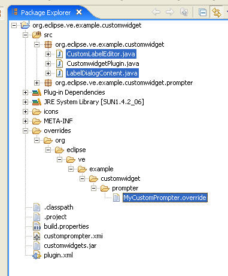
 Make sure to launch the workspace with the -clean option, as we have changed the manifest file.
Make sure to launch the workspace with the -clean option, as we have changed the manifest file.
 If you are reading this before a VE1.1 release build, you may have to do a
Project->clean, close, and reopen the java project that you are using the
MyCustomPrompter class so that the introspector clear its beaninfo cache.
If you are reading this before a VE1.1 release build, you may have to do a
Project->clean, close, and reopen the java project that you are using the
MyCustomPrompter class so that the introspector clear its beaninfo cache.
The following is the an image of the cell editor that will now come up when a user press on the ... button of the text property of a MyCustomPrompter.
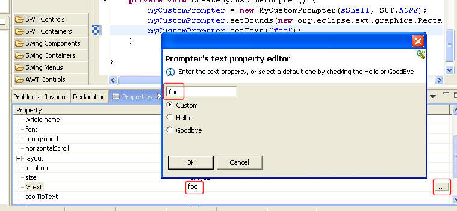
Since the MyCustomPrompter is a SWT Composite, VE will use the default Composite GEF edit part. In this tutorial we are going to override the edit part that VE will use for the prompter. This edit part will not do much, but add the prompter icon, and some text on top of the screen scrape image of the prompter. The new class CustomWidgetGraphicalEditPart.java adds the following:
public class CustomWidgetGraphicalEditPart extends ControlGraphicalEditPart {
protected IFigure createFigure() {
ImageFigure figure = (ImageFigure) super.createFigure();
Label customFigure = new Label("VE Rules",CustomwidgetPlugin.getCustomImage());
customFigure.setForegroundColor(ColorConstants.red);
customFigure.setTextPlacement(PositionConstants.SOUTH);
// ImageFigure has no layout, so we will have to explicitly set the size().
// To get a prefered size (before we hoop up to the hierarchy), Label will need a Font
customFigure.setFont(((GraphicalEditPart)getParent()).getFigure().getFont());
customFigure.setSize(customFigure.getPreferredSize());
figure.add(customFigure);
return figure;
}
}
The edit part extends the default Control editpart. The reason we did not extend the default composite one, is that we do not want to allow one to "drop" anything into our prompter. All we do here, is add a Label figure to the main (screen scraped) figure.
Now that we have a custom edit part, we are going to use the same MyCustomPrompter.override and add to it the following;
<event:AddMany featureName="eAnnotations">
<addedEObjects xsi:type="org.eclipse.ve.internal.cde.decorators:ClassDescriptorDecorator"
graphViewClassname="org.eclipse.ve.example.customwidget/org.eclipse.ve.example.customwidget.CustomWidgetGraphicalEditPart">
</addedEObjects>
<addedEObjects xsi:type="codeGenHelpers:CodeGenHelperClass" source="codegen.CodeGenHelperClass"
expDecoder="org.eclipse.ve.example.customwidget/org.eclipse.ve.example.customwidget.CustomPrompterDecoder"/>
</event:AddMany>
We are annotating the class itself with a ClassDescriptorDecorator. A ClassDescriptorDecorator has a graphViewClassname property. It uses the <plugin_name>/<class_name> format.
 If you are reading this before a VE1.1 release build, you may have to do a
Project->clean, close, and reopen the java project that you are using the
MyCustomPrompter class so that the introspector clear its beaninfo cache.
If you are reading this before a VE1.1 release build, you may have to do a
Project->clean, close, and reopen the java project that you are using the
MyCustomPrompter class so that the introspector clear its beaninfo cache.
The new edit part will render the Prompter figure with the new Label figure (text and icon) as following:
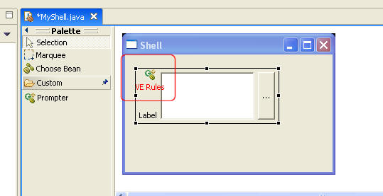
Since the MyCustomPrompter is a SWT Composite, VE will use the default Composite Decoder to handle the reverse parse, and code generation for the MyCustomPrompter class. For every source code (AST) expression that is modeled in VE will use an instance of an expression Decoder. The Decoder uses two helpers: a feature mapper, and a decoder helper. The feature mapper is the guy that maps a source code expression to a VE (EMF) model feature and vice versa. The decoder helper is a specific helper that knows how to reverse parse AST expressions into the VE model, as well as generate source code from the VE model. The role if the Decoder itself is to figure out which mapper and helper to use for a given expression.
In this tutorial we will use a simple Decoder that will add a special comment to the setText expression, when the text property is changed for a MyCustomPrompter instance. We will first create the CustomPrompterDecoderHelper.java helper.
public class CustomPrompterDecoderHelper extends SimpleAttributeDecoderHelper {
/* (non-Javadoc)
* @see org.eclipse.ve.internal.java.codegen.java.IExpressionDecoderHelper#generate(java.lang.Object[])
*/
public String generate(Object[] noArgs) throws CodeGenException {
String result = super.generate(noArgs);
// Add a comment at the end of the expression
int idx = result.lastIndexOf(';') + 1;
return result.substring(0, idx) + " // Prompter Text Property " + result.substring(idx, result.length());
}
}
The helper is responsible to reverse parse and generate source code from the model. This helper overrides the generate method of the default helper, and just adds the // Prompter Text Property comment at the end of the expression that is generated by the SimpleAttributeDecoderHelper.
We will now create a special Decoder, CustomPrompterDecoder.java. This Decoder will use the helper above when the text property is the one that the Decodr instance is responsible for:
public class CustomPrompterDecoder extends SWTControlDecoder {
protected void initialDecoderHelper() {
// if it is the text property that this decoder is decoding, use
// our special helper
if (fFeatureMapper.getFeature(null).getName().equals("text"))
fhelper = new CustomPrompterDecoderHelper(fbeanPart, fExpr, fFeatureMapper, this);
else
super.initialDecoderHelper();
}
}
The last thing that remains to do, is to use the same MyCustomPrompter.override and add to it the following:
<event:AddMany featureName="eAnnotations">
<addedEObjects xsi:type="org.eclipse.ve.internal.cde.decorators:ClassDescriptorDecorator"
graphViewClassname="org.eclipse.ve.example.customwidget/org.eclipse.ve.example.customwidget.CustomWidgetGraphicalEditPart">
</addedEObjects>
<addedEObjects xsi:type="codeGenHelpers:CodeGenHelperClass" source="codegen.CodeGenHelperClass"
expDecoder="org.eclipse.ve.example.customwidget/org.eclipse.ve.example.customwidget.CustomPrompterDecoder"/>
</event:AddMany>
We are annotating the MyCustomPrompter class with a CodeGenHelperClass (this helper is dynamically created by EMF at this point, and hence the different syntax on it). But in essence it tells VE that for a MyCustomPrompter, use the CustomPrompterDecoder class.
In part 1 of this tutorial, we looked at what is necessary to create a bare-bones Rich Client application. The next part will delve into customizations using the WorkbenchAdvisor class. All the sample code for this part may be viewed at the Eclipse project here. You can use Eclipse's built-in CVS client to download the source to your workspace.
IBM is trademark of International Business Machines Corporation in the United States, other countries, or both.
Java and all Java-based trademarks and logos are trademarks or registered trademarks of Sun Microsystems, Inc. in the United States, other countries, or both.
Microsoft and Windows are trademarks of Microsoft Corporation in the United States, other countries, or both.
Other company, product, and service names may be trademarks or service marks of others.